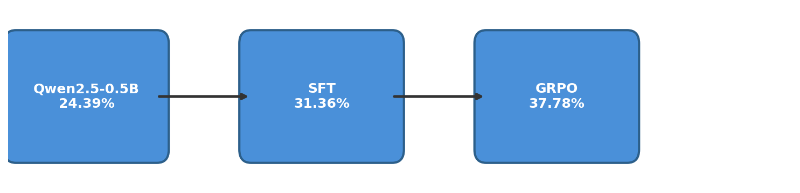
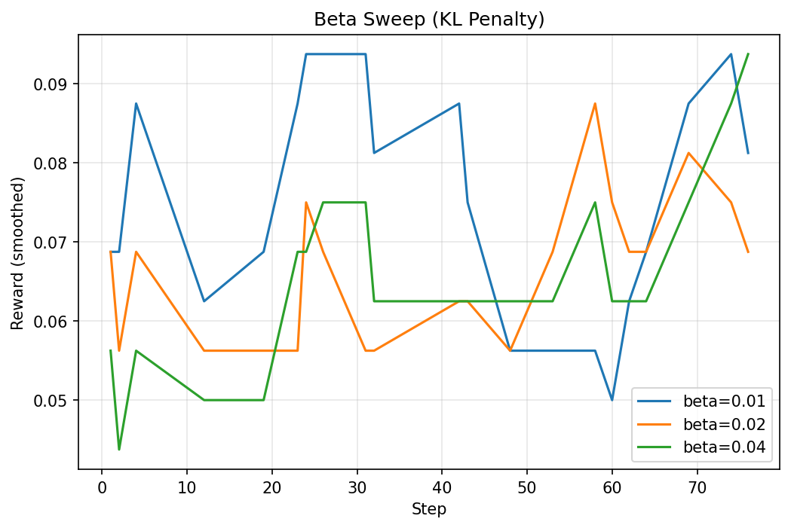
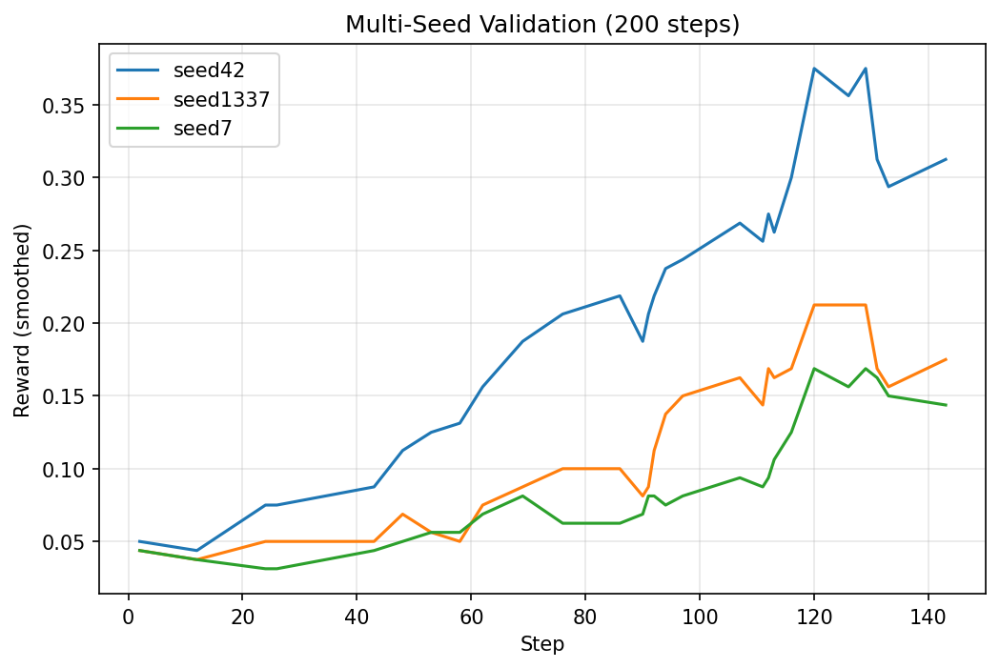
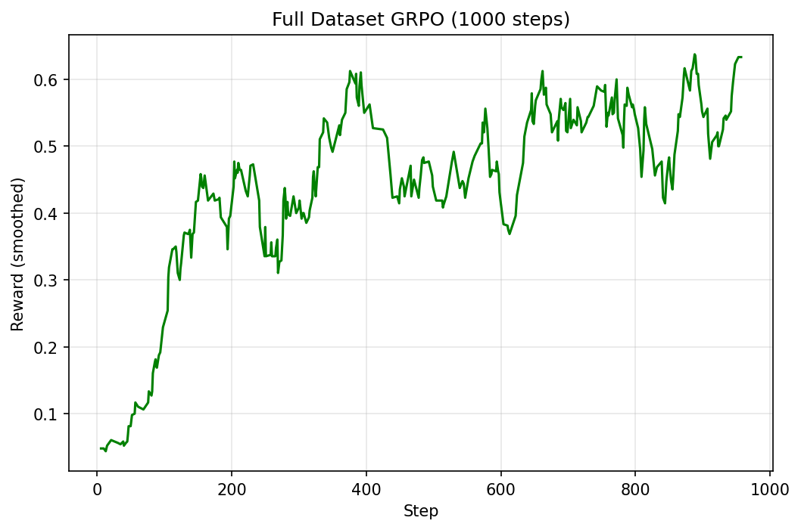

Binary Beats Tiered: GRPO Reward Design on GSM8K
A 0.5B model goes from 25% to 50% on grade-school math — and the simpler reward wins.
I wanted to test a hypothesis: to train a SLM(Small language model) to solve basic math problems. To achieve this, I implemented an RL pipeline with SFT followed by RLVR(RL with Verifiable Reward). I picked Qwen2.5-0.5B - small enough to LoRA fine-tune on a free Colab GPU and GSM8K as the training dataset. The process of RLVR requires the model to generate multiple generations, then use a deterministic function that scores each generation. The model then tries to maximize the reward. This post walks through building the full end-to-end RL training and reasoning behind it.
Spoiler alert: the binary reward won. The rest of this post is about why, and what I learned along the way.
The Problem
To teach a Small Model to Reason : GRPO (Group Relative Policy Optimization) is a reinforcement learning algorithm from DeepSeek. The core idea: generate multiple responses to the same prompt, score them with a reward function, and update the policy(model) to favor the better ones — no critic model needed. The “group relative” part means rewards are normalized within each group, so the model learns from relative quality, not absolute scores. Simple, elegant, and cheap to run.
But here’s the open question: what reward signal do you actually give it?
Reason behind picking GSM8K as it’s ideal for testing reward design. The answers are just numbers — easy to verify programmatically. The problems require multi-step reasoning, so the model can’t just pattern-match. And everyone benchmarks on it, so the results are comparable.

Setup
| Component | Details |
|---|---|
| Base model | Qwen2.5-0.5B |
| Algorithm | SFT → GRPO (two-stage) |
| LoRA | r=32, α=16 (SFT) / r=16, α=32 (GRPO) — higher effective scaling (α/r = 2) during GRPO to amplify reward signal |
| Train data | 1024 GSM8K examples |
| Eval | 660 examples (50% of GSM8K test) |
| Hardware | Colab T4/L4 GPU |
The stack: trl and transformers for SFT and GRPO training, peft for LoRA, torch as the backend, wandb for experiment tracking, and gsm8k_utils — a small custom library wrapping prompt formatting, answer extraction, and the GRPOExperiment class for reproducible runs.
The first step was formatting GSM8K into a chat template — system prompt + user question + assistant response ending with The answer is: {number}. This gives the model a consistent structure to learn from during SFT, and a parseable format to reward during GRPO.
Experiment Iteration
Stage 1: SFT — Teaching the Format
Before throwing RL at this model, it needed to learn the format — how to take a question, reason through it step-by-step, and land on The answer is: {number}. That’s what SFT does here: not teaching math, just teaching manners or following given instructions.
Suspiciously good baseline. The base model scored 24.39% on 660 eval examples before any training. For a 0.5B model, that’s surprisingly high — there’s a decent chance GSM8K leaked into its pre-training data. I noted it and moved on.
Light touch. I fine-tuned with LoRA (r=32, α=16) on just 1024 examples for 1 epoch. More epochs actually hurt — the loss kept dropping but eval accuracy degraded, a classic sign of overfitting/catastrophic forgetting. One epoch was the sweet spot: 24.39% → 31.36%.
Vibe check. The model gets the right answer… and then doesn’t know when to stop:
The answer is: 126.książka
The answer is: 126.książka
The answer is: 126.książka
...It picked up the format and the reasoning, but its generation quality is terrible — repetition loops, garbage tokens after the answer. This is fine for eval (we just parse the first number), but it shows why we need GRPO: SFT taught the format, now RL needs to teach quality.
Stage 2: Binary vs Tiered Reward
GRPO needs a reward signal to rank its rollouts. I tested two: a carefully tiered partial-credit scheme, and a dead-simple binary (right/wrong).
My hunch: tiered rewards might encourage reward hacking — the model optimizing for easy partial credit rather than actually solving the problem. Let’s see.
Tiered reward (partial credit based on closeness + format bonuses):
| Condition | Reward | |—|—| | Correct answer + correct format | 8.0 | | Correct answer + no format | 3.2 | | Wrong answer + correct format | 1.6 + 1.2 × closeness | | Wrong answer + no format | 1.2 × closeness | | No number extracted | 0.0 |
Where
closeness = max(0, 1 - |answer - gold| / max(|gold|, 1))— ranges from 0 (way off) to 1 (spot on), giving partial credit for being in the right ballpark.- Pre-GRPO: 25.15% → Post-GRPO: 33.18%
Binary reward (just 1.0 or 0.0):
| Condition | Reward | |—|—| | Correct answer | 1.0 | | Incorrect answer | 0.0 |
- Pre-GRPO: 25.76% → Post-GRPO: 35.91%
(The slightly different baselines — 25.15% vs 25.76% — are from separate runs with different random seeds.)
Binary beat tiered by ~2.7 percentage points (35.91% vs 33.18%). The cleaner signal won — no partial credit to game, just right or wrong.
Stage 3: Hyperparameter Sweep
Binary reward locked in. Next question: what hyperparameters actually matter?
I swept four parameters one-at-a-time against a base config (max_steps=100, max_completion_length=512), 10 runs total on a Colab T4:
| Parameter | Values tested | Best | Accuracy |
|---|---|---|---|
beta (KL penalty) |
0.01, 0.02, 0.04 | 0.04 | 37.42% |
learning_rate |
1e-5, 5e-5, 1e-4 | 5e-5 | 35.61% |
num_generations |
8, 16 | 16 | 32.58% |
sft_frac |
0.0, 0.5, 1.0 | 1.0 | 33.79% |
A few things jumped out:
lr=1e-4was catastrophic — accuracy dropped to 26.82%, below the SFT baseline. Too aggressive.sft_frac=0.0also hurt (27.73%) — pure GRPO without any SFT loss mixing destabilized training. Keeping the SFT loss as a regularizer matters.beta=0.04was the single biggest winner — a higher KL penalty kept the model from drifting too far from the SFT checkpoint.num_generations=16was chosen over 8 despite 8 scoring slightly higher in the sweep (32.58% vs 31.67%). More generations per step means faster iteration through the dataset — the model sees more of the training distribution sooner. The sweep difference was within noise, but 16 scales better with longer training.

Best combined config for the final run (200 steps): beta=0.04, lr=5e-5, num_generations=16, sft_frac=1.0.
Stage 4: Multi-Seed Validation
RL training is messy. The same config can land in different spots depending on random seed — LoRA init, data shuffling is fixed for uniformity of the experiment, rollout sampling all introduce variance. One good run doesn’t prove anything.
So I ran the best config (beta=0.04, lr=5e-5, num_generations=16, sft_frac=1.0) for 200 steps across three seeds:
| Seed | Accuracy |
|---|---|
| 42 | 40.00% |
| 1337 | 37.27% |
| 7 | 36.06% |
| Mean ± std | 37.78% ± 2.61% |

That ~5% spread between best and worst seed is real — at 0.5B parameters, you’re at the mercy of the training lottery. But even the worst seed (34.85%) comfortably beats SFT alone (31.36%), so the signal is real. GRPO is consistently helping, even if the magnitude varies.
Why 200 steps? The sweep runs used 100 steps. Doubling it let the best config converge further — and helped separate configs that plateau early from ones that keep climbing.
Stage 5: Scaling Up Training
The sweep used 1024 examples and 100–200 steps. Time to take the best config and throw the full dataset at it.
One accidental discovery: the full run used beta=0.02 instead of the sweep-winning 0.04 — a copy-paste oversight. Despite this suboptimal setting, the model still hit nearly 50%. The right beta might push it even higher.
| Sweep (best seed) | Full run | |
|---|---|---|
| Train data | 1024 examples | ~7,473 (full GSM8K) |
| Steps | 200 | 1,000 |
| Effective samples | ~3,200 | ~32,000 (~4.3 epochs) |
| Accuracy | 40.00% | 49.70% |

That’s a 0.5B model hitting nearly 50% on GSM8K — double the base model’s 24.39%.
Vibe check. The generations are noticeably cleaner now:
In April, Natalia sold 48 clips. In May, she sold 48/2 = 24 clips.
Altogether, 48 + 24 = 72 clips.
The answer is: 72.柃Still a garbage token at the end (柃 this time — the książka has evolved), but the reasoning chain is coherent, concise, and correct. The model learned to think, even if it hasn’t learned to stop.
Lessons Learned
The double format_prompt bug. My early eval code pre-formatted prompts with the chat template, then the eval function wrapped them again — double-wrapping. The model was being evaluated on garbled inputs, and I didn’t notice until I refactored into gsm8k_utils and the numbers shifted. Lesson: if your eval function formats inputs internally, don’t pre-format them too.
max_length=256 silently ate my best examples. SFT was configured with max_length=256 tokens, but ~15% of training examples (153/1024) exceeded that — the hardest problems with the longest reasoning chains. Exactly the ones I most wanted the model to learn from. Bumping to 512 fixed it. Always check how much of your data survives truncation.
RL variance is no joke at 0.5B. Three seeds, same config: 36.06%, 37.27%, 40.00%. A ~4% spread. At this scale, a single run can easily mislead you. Always validate with multiple seeds before drawing conclusions.
Code
All notebooks, configs, and gsm8k_utils are on GitHub: tripathysagar/rlhf-gsm8k
Training logs on W&B: grpo-gsm8k | grpo-gsm8k-full